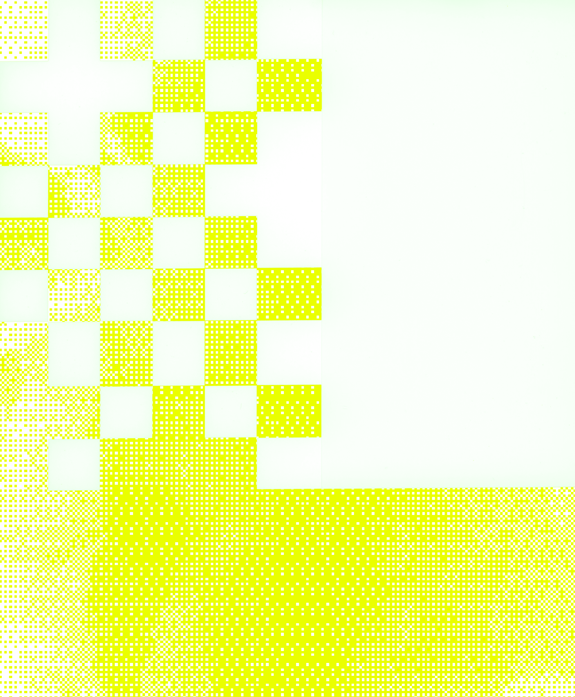
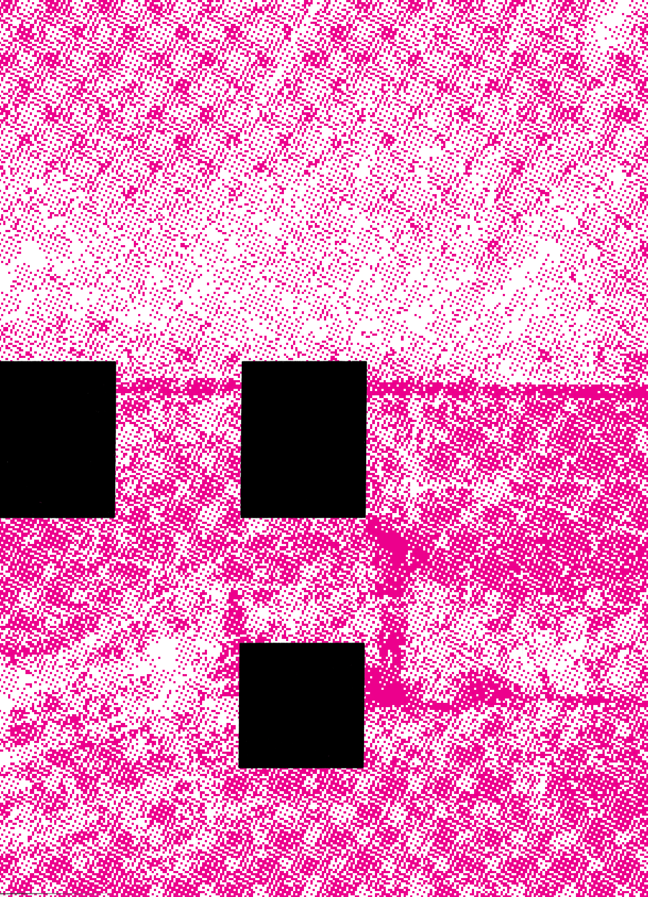

| Cool-Stuffz.jpigs | ||
|  | ||
|  | ||
|
One of our goals for this topic studio is to encourage making along with intellectual rigor and discussion, yet also empower you with a sense of independence and ownership of your work. We aim to set up the best possible conditions and productive project prompts to encourage your independent investigations through some shared objectives. Our primary role as instructors is to reflect on the ideas you bring forward, and to challenge and provoke discussion between class participants. The understanding being that “challenge” and “provocation” are ways of pushing your work forward and engaging in critical conversation at a very high level. In truth, your projects belong to each of you and we are excited to see how you respond both as individuals and as a class. |
||